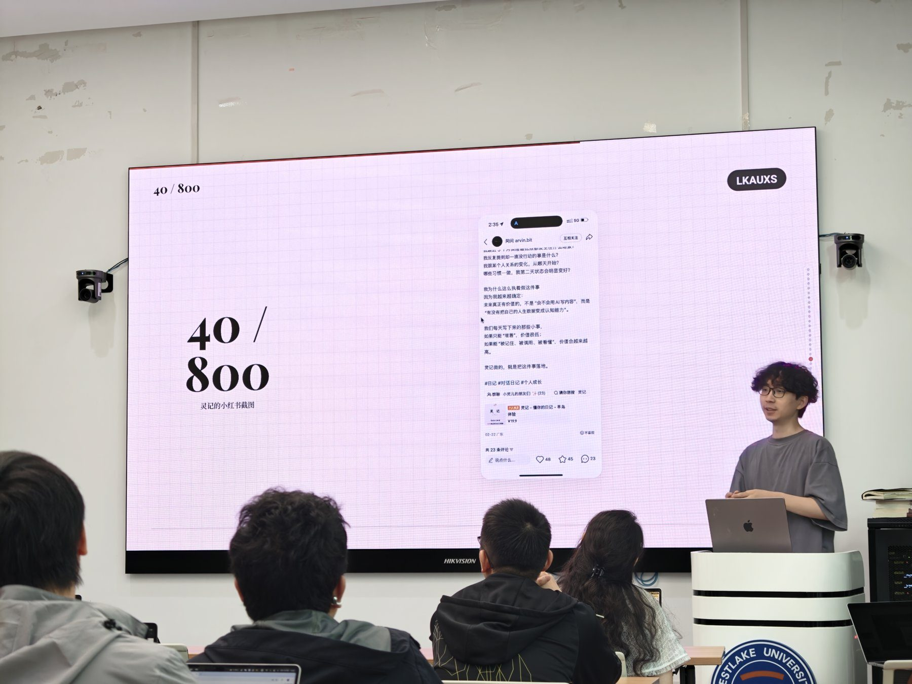
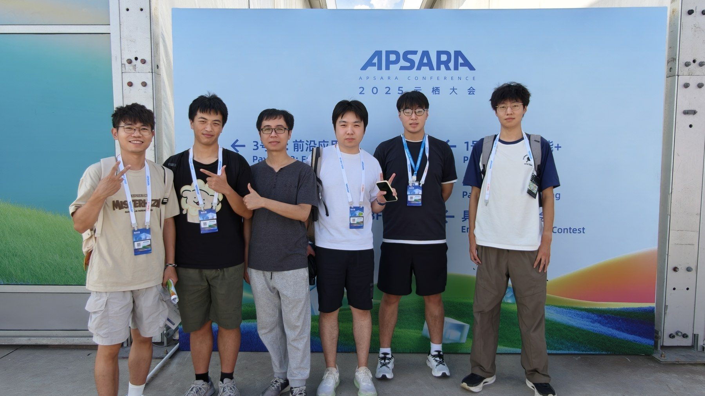

走出日常，走向更广阔的交流与实践现场。
暂时没有匹配的活动，试试其他关键词或年份。

AI 交叉科学社与 Honghub 联合举办交流活动，围绕人工智能应用、校园实践与真实问题展开分享。
以真实生活问题为起点，鼓励同学使用人工智能工具完成网页应用，把想法变成可以展示和使用的作品。
介绍首届西湖大学 AI Maker 创客大赛的参赛方式、作品要求、评审流程与资源支持，欢迎带着真实问题来报名。

参加云栖大会相关活动，关注人工智能、具身智能、智能终端与 Agent 等前沿方向，开启本学年的交叉交流。